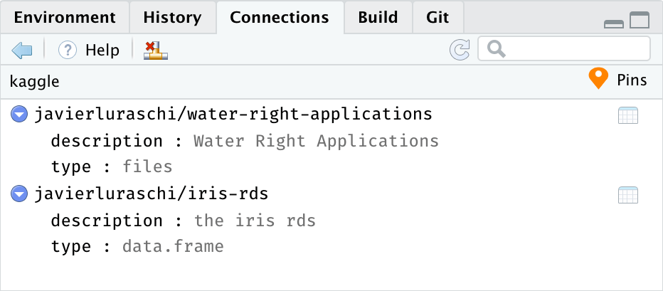
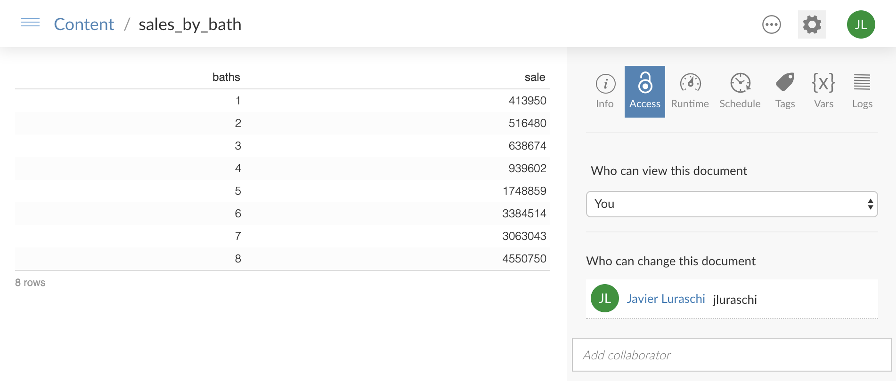
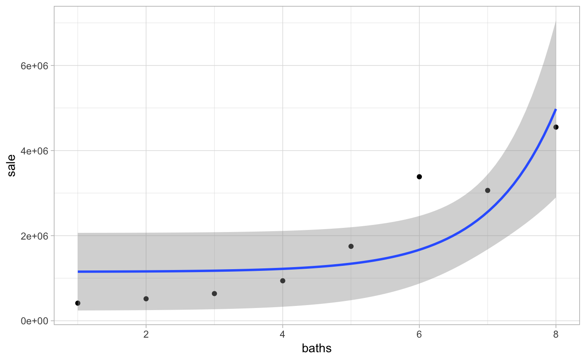

You can use the pins package from R, or Python, to:
-
Pin remote files into a local cache with
pin()to work offline and even if the remote resource is removed. -
Share resources by pinning them to GitHub, Kaggle or RStudio Connect; find pins with
pin_find()and retrieve their contents withfetch().
To start using pins, install this package as follows:
You can pin remote files with pin() to cache those files locally, such that, even if the remote resource is removed or while working offline, your code will keep working by using a local cache:
library(tidyverse)
library(pins)
retail_sales <- read_csv(pin("https://raw.githubusercontent.com/facebook/prophet/master/examples/example_retail_sales.csv"))You can also cache intermediate results to avoid having to recompute expensive operations:
retail_sales %>%
group_by(month = lubridate::month(ds, T)) %>%
summarise(total = sum(y)) %>%
pin("sales_by_month")## # A tibble: 12 x 2
## month total
## <ord> <dbl>
## 1 Jan 6896303
## 2 Feb 6890866
## 3 Mar 7800074
## 4 Apr 7680417
## 5 May 8109219
## 6 Jun 7451431
## 7 Jul 7470947
## 8 Aug 7639700
## 9 Sep 7130241
## 10 Oct 7363820
## 11 Nov 7438702
## 12 Dec 8656874You can also find remote resources using pin_find() which can search CRAN packages and Kaggle. Kaggle requires to configure it by running once board_register("kaggle", token = "<path-to-kaggle.json>"). Then we can search resources mentioning “seattle” in CRAN packages and Kaggle with ease:
## # A tibble: 24 x 4
## name description type board
## <chr> <chr> <chr> <chr>
## 1 hpiR/seattle_sales Seattle Home Sales from hpiR pack… table packa…
## 2 microsynth/seattledmi Data for a crime intervention in … table packa…
## 3 vegawidget/data_seattle… Example dataset: Seattle daily we… table packa…
## 4 vegawidget/data_seattle… Example dataset: Seattle hourly t… table packa…
## 5 airbnb/seattle Seattle Airbnb Open Data files kaggle
## 6 aaronschlegel/seattle-p… Seattle Pet Licenses files kaggle
## 7 shanelev/seattle-airbnb… Seattle Airbnb Listings files kaggle
## 8 seattle-public-library/… Seattle Library Checkout Records files kaggle
## 9 rtatman/did-it-rain-in-… Did it rain in Seattle? (1948-201… files kaggle
## 10 city-of-seattle/seattle… Seattle Checkouts by Title files kaggle
## # … with 14 more rowsNotice that all pins are referenced as <owner>/<name> and even if the <owner> is not provided, pins() will assign an appropriate one.
You can then retrieve a pin as a local path through pin_get(),
## # A tibble: 43,313 x 16
## pinx sale_id sale_price sale_date use_type area lot_sf wfnt
## <chr> <chr> <int> <date> <chr> <int> <int> <dbl>
## 1 ..00… 2013..… 289000 2013-02-06 sfr 79 9295 0
## 2 ..00… 2013..… 356000 2013-07-11 sfr 18 6000 0
## 3 ..00… 2010..… 333500 2010-12-29 sfr 79 7200 0
## 4 ..00… 2016..… 577200 2016-03-17 sfr 79 7200 0
## 5 ..00… 2012..… 237000 2012-05-02 sfr 79 5662 0
## 6 ..00… 2014..… 347500 2014-03-11 sfr 79 5830 0
## 7 ..00… 2012..… 429000 2012-09-20 sfr 18 12700 0
## 8 ..00… 2015..… 653295 2015-07-21 sfr 79 7000 0
## 9 ..00… 2014..… 427650 2014-02-19 townhou… 79 3072 0
## 10 ..00… 2015..… 488737 2015-03-19 townhou… 79 3072 0
## # … with 43,303 more rows, and 8 more variables: bldg_grade <int>,
## # tot_sf <int>, beds <int>, baths <dbl>, age <int>, eff_age <int>,
## # longitude <dbl>, latitude <dbl>Finally, you can also share resources with others by publishing to particular to Kaggle, GitHub and RStudio Connect. We can easily publish iris to Kaggle as follows:
And use all the functionality available in pins from Python as well:
There are other boards you can use or even create custom boards as described in the Understanding Boards article; in addition, pins can also be used with RStudio products which we will describe next.
RStudio
You can use RStudio to discover and pin remote files and RStudio Connect to share content within your organization with ease.
To find remote resources, simply expand the “Addins” menu and select “Find Pin” from the dropdown:

Notice that, the RStudio connections pane helps you track your pins by providing each board as a connection you can explore:

You can share local files and content using the RStudio Connect board. Lets use dplyr and the hpiR_seattle_sales pin to analyze this further and then share our results in RStudio Connect:
pin_get("hpiR/seattle_sales") %>%
group_by(baths = ceiling(baths)) %>%
summarise(sale = floor(mean(sale_price))) %>%
pin("sales-by-baths", board = "rstudio")## Preparing to deploy data...DONE
## Uploading bundle for data: 5221...DONE
## Deploying bundle: 12615 for data: 5221 ...## Building static content...## Launching static content...## Data successfully deployed to https://beta.rstudioconnect.com/content/5221/## # A tibble: 8 x 2
## baths sale
## <dbl> <dbl>
## 1 1 413950
## 2 2 516480
## 3 3 638674
## 4 4 939602
## 5 5 1748859
## 6 6 3384514
## 7 7 3063043
## 8 8 4550750
You can now set the appropriate permissions in RStudio Connect, and voila! From now on, those with access can make use of this remote file locally!
For instance, a colleague can reuse the sales-by-baths pin by retrieving it from RStudio Connect and visualize its contents using ggplot2:
pin_get("sales-by-baths") %>%
ggplot(aes(x = baths, y = sale)) +
theme_light() + geom_point() +
geom_smooth(method = 'lm', formula = y ~ exp(x))
Please make sure to pin visit rstudio.github.io/pins to find detailed documentation and additional resources.